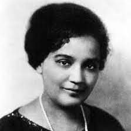
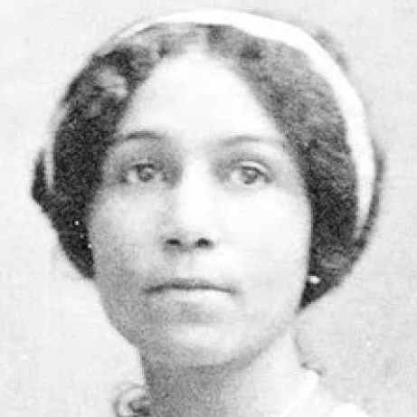
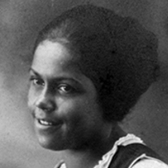
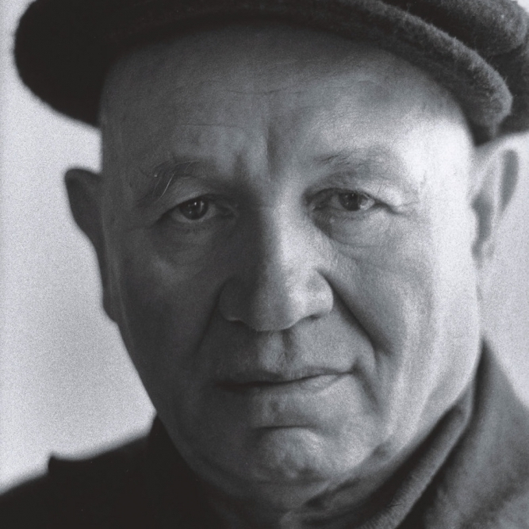
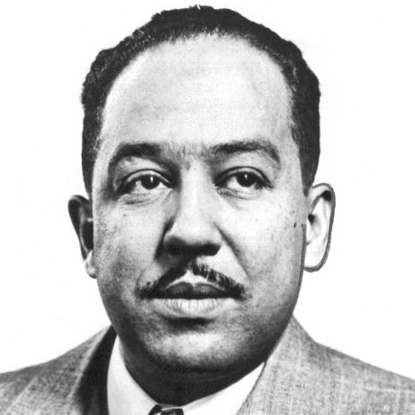
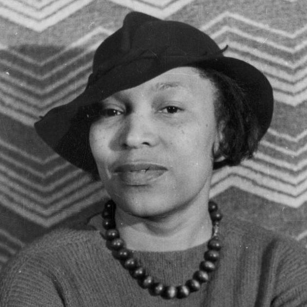
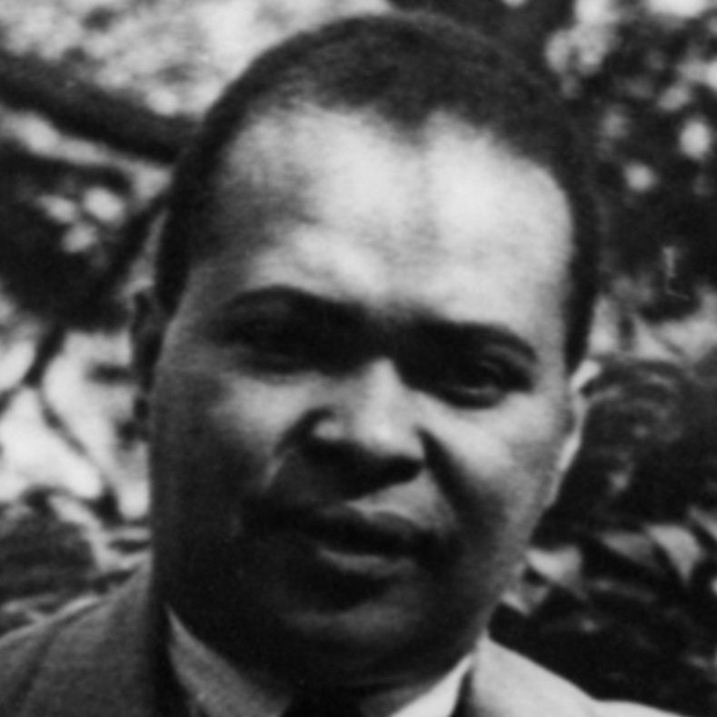
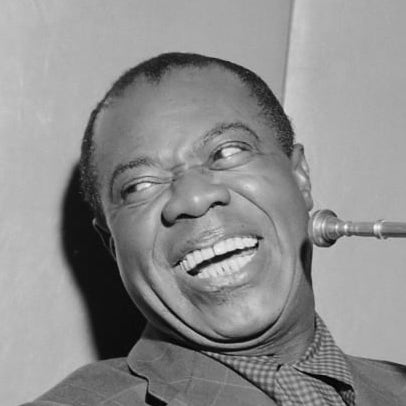

Harlem, New York Circa 1920s
Harlem Renaissance in Brief
The Harlem Renaissance (1918–1937) was the transformation of the Harlem neighborhood in New York City into a black cultural mecca. This transformation resulted in a subsequent social and artistic explosion in the area. The Harlem Renaissance is considered a golden age in African-American culture, in which literature, music, theater, and art flourished.
Map of the Great Migration
Context (Pre-1920s)
In the early 1900s, middle-class African-Americans moved from the neighborhood of Bohemia to Harlem. After failing to kick blacks out, many whites fled the neighborhood, creating fertile ground for new cultural development. From 1915 to 1916, natural disasters in the South put many African-American workers and sharecroppers out of work, compelling many to migrate north in search of work. During and after WW1, immigration into the United States dropped, pressuring Northern recruiters heading south to employ workers from the South, particularly African-Americans. Due to the lack of work, economic incentives from the North, and growing Northern African-American communities, the Great Migration (1910-1920) occurred. By 1920, 300,000 African Americas had moved north, many to Harlem.

Jessie Redmon FaucetJessie Redmon Faucet (1882–1961) was a poet and novelist who explored African-American cultural identity, specifically in the white-dominated Manhattan she wrote in. Faucet portrayed primarily middle-class African-Americans who dealt with self-hate and racial prejudice. Faucet was also an editor for Crisis—a magazine created by the NAACP during the Harlem Renaissance. |

Georgia Douglas JohnsonGeorgia Douglas Johnson (1877–1966) was a poet and playwright who tackled the confining aspects of women's roles and the issues of race. She also published many of her poems in Crisis in addition to hosting numerous Literary Evenings which became cultural gatherings in Harlem. |

Gwendolyn BennettGwendolyn Bennett (1902–1981) was a poet who covered ideas of African-American identity, culture, and heritage in her works. In addition to publishing in Crisis, Bennett also published in Fire!!—an African-American-run magazine during the Harlem Renaissance which aimed to challenge the older black generation. |

Romare BeardenRomare Bearden (1911-1988) was an Artist who utilized personal memories, black heritage, and literature as the inspiration for his works to tackle the realities of black life during the Harlem Renaissance. Bearden’s work was in a cubist style, commonly created through the use of photomontage compositions, or collages. |

Langston HughesLangston Hughes (1901–1967) was a poet that portrayed American black life by incorporating his personal experiences into his pieces. Furthermore, by tackling broad topics such as gender and race, Hughes was able to attract a broader audience to his work, gaining popularity. Additionally, Hughes published many of his works in both Fire!! and Crisis. |

Zora Neale HurstonZora Neale Hurston (1981–1960) was a novelist who wrote folk fiction about the Black South. Many of Hurston’s works, including Their Eyes Were Watching God, tackled the topics of self-reliance, womanhood, and race. Along with her novels, Hurston edited and contributed to Fire!!. |

Countee CullenCountee Cullen (1903–1946) was a poet who embraced both black and white cultures in his works. These poems were used by Cullen as a vehicle to break down barriers of race. Also, Cullen published in both Crisis and Fire!!. |

Louis ArmstrongLouis Armstrong (1901–1971) was a Jazz Musician, who didn’t live in Harlem but commonly played in the Harlem neighborhood. Predominantly through exposure to Harlem and other African-American communities, Armstrong developed Jazz music through African-American cultural expression. |
Civil Rights Protest
What has persisted?
The Great Depression and the Harlem Race Riot of 1935 largely ended the Harlem Renaissance, though its cultural impact has persisted since. The Harlem Renaissance laid the groundwork for subsequent Black Literature, with many themes of race and identity present in numerous works. Additionally, as a result of the Harlem Renaissance, African-Americans gained a greater involvement in both music and theater. This cultural transition also gave artists greater control over black culture and their experience, creating change through culture. Lastly, the Harlem Renaissance set the stage for the Civil Rights Movement of the mid-twentieth century, with many of its racial themes persisting even to this day.
Aaron Douglas, Song of the Towers
Defining themes of the Harlem Renaissance
The most prominent and overarching theme of the Harlem Renaissance is the theme of race. Racial struggles were the motivator for the cultural change of the Harlem Renaissance, though these struggles of race had themes of their own. Especially early on, the impact of slavery influenced the people of Harlem, especially as many of the initial African-American residents of Harlem were migrants from the South after slavery. These former slaves, or children of former slaves, explored themes of dehumanization, after being framed in an inferior sense, something that still persisted after the end of slavery.
As the Harlem Renaissance continued, themes of identity and community became evident, especially in many of the cultural works created at the time. This distinct cultural identity and the African-American sense of community that was created defined the Harlem Renaissance as a sense of African-American pride took hold. Much that defined the struggle and the culture of African-Americans in Harlem were based on the everyday experiences of the people, especially as they faced issues of racial discrimination. Because of these experiences, self-expression became a powerful tool to combat this discrimination and instill hope into the African-American population. These ideas of self-expression as a means to combat oppression and adversity have continued on, even after the Harlem Renaissance.